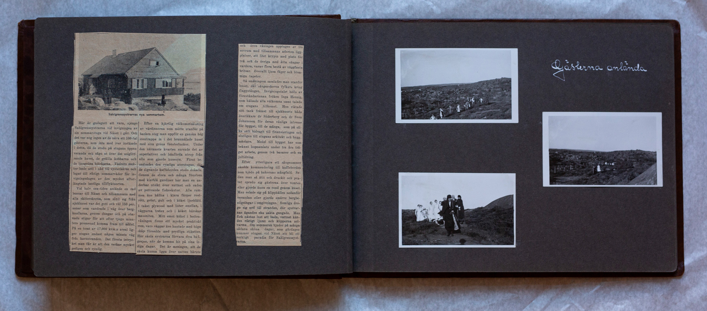

Uppslag 11
{kind=link}


Sahlgrenssystrarnas nya sommarhem Här är gudagott att vara, sjöngo Sahlgrenssystrarna vid invigningen av sin sommarstuga vid Näset igår. Och det var nog ingen av de nära ett 100-tal gästerna, som inte med iver stämde in i detta, då de stodo på stugans öppna veranda och sågo ut över det solglittrande havet, de grålila kobbarna och de ljusgröna björkarna. Vädrets makter hade sett i nåd till systerkåren och lagat till riktigt sommarväder för invigningsdagen av den mycket efterlängtade lantliga tillflyktsorten. Vid halv sex-tiden anlände en rad bussar till Näset och tillsammans med alla sköterskorna, som slitit sig från sjukhuset var det gott och väl 150 personer som vandrade iväg över bergknallarna, genom dungar och obanade stigar för att efter 20 minuters promenad komma fram till målet. På en tomt av 17,000 kvm:s areal ligger stugan endast någon minuts väg från havsstranden. Det första intrycket man får är att den är mycket gedigen och rymlig. Efter en hjärtlig hälsning av värdinnorna som mötte utanför på backen steg man uppför en ganska hög stentrappa in i det brunmålade huset med sina gröna fönsterluckor. Under den första kvarten surrade det av superlativer och hänförda utrop från alla som gjorde husesyn. Först beundrades den rymliga storstugan, där de dignande kaffeborden stodo dukade. Genom de många och stora fönstren med klarblå gardiner har man en underbar utsikt över vattnet och raden av puttrande fiskeskutor. Alla rummen äro hållna i klara färger, rostrött, grönt, gult och i köket ljusblått. I taket plywood med lister emellan, i väggarna tretex och i köket härskar masoniten. Mitt emot köket i bottenvåningen finns ett mycket praktiskt rum, vars väggar äro kantade med höga skåp försedda med prydliga etiketter. Här skola systrarna förvara sina badgrejor, när de komma hit på lediga dagar. Det är meningen att de skall kunna ligga över natten härute och övre våningen upptages av tre sovrum med tillsammans aderton liggplatser, ett liter krypin med plats för två och de övriga med åtta sängar i vardera, varav flera bestå av väggfasta britsar. Överallt ljusa färger och blommiga tapeter. Så småningom samlades man utanför huset där såpngerskorna fylkats kring flaggstången. Invigningstalet hölls av föreståndarinnan fröken Inga Hennig som hälsade alla välkommna samt talade om stugans tillkomst. Hon riktade sitt tack främst till sjukhusets båda överläkare dr Söderbergh och dr Sven Johansson för deras vänliga intresse för bygget, till de många som på olika sätt bidragit till finansieringen och slutligen till stugans arkitekt och byggmästare. Medel till bygget har som bekant hopsamlats under tr års träget hopsamlande, genom två bazarer och en jultidning. Efter ytterligare ett sång nummer skedde kommendering till kaffeborden som bjödo på kakornas mångfald. Sedan man ätit och druckit och pratat spredo sig gästerna över tomten eller gjorde en rond genom huset. Man solade sig på klipphällen nedanför verandan eller gjorde smärre berbestigningar i omgivningen. Somliga droga sig ner till stranden där systrarnas ägandes eka sakta gungade. Man fick nästan lust att bada, vattnet kändes ljumt och klipporna solvarma. Om sommaren bjuder på många sådana sköna dagar, som gårdagen kommer stugan vid Näset bli ett riktigt paradis för Sahlgrensystrarna.